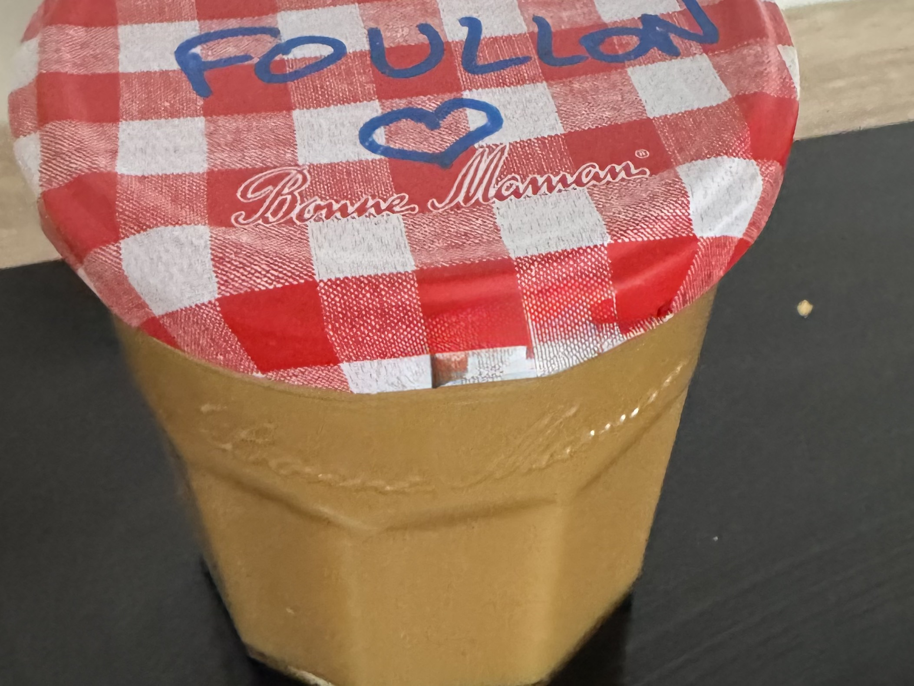

Caramel
Ingredients
4×
- 75 g de beurre demi-sel
- 130 g de sucre de canne
- 210 g de crème fleurette

Préparation
Étape 1
Ajouter le fouet
Étape 2
Mettre 75 g de beurre demi-sel coupés en morceaux et 130 g de sucre de canne dans le Thermomix. Chauffer 4 min/60°C/vitesse 2
Étape 3
Ajouter 210 g de crème fleurette dans le Thermomix et cuire 55 min/ 100°C/vitesse 1 sans le gobelet doseur.
Étape 4
Transvaser le contenu du Thermomix dans un pot de confiture puis réserver au frigo. Se conserve 1 mois.